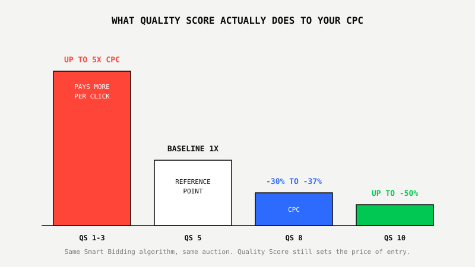
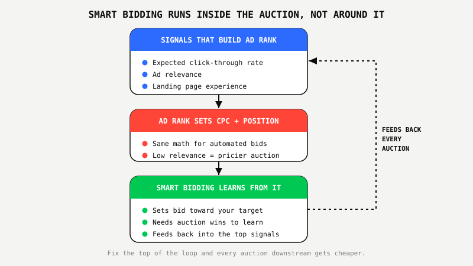

Google Ads Quality Score Still Decides What You Pay, Even With AI Bidding

Key Takeaways
- Google labels the visible Quality Score a "diagnostic metric," not an auction input, but Ad Rank still runs on the identical three components: expected CTR, ad relevance, and landing page experience.
- Benchmark analysis across Google Ads accounts shows a keyword moving from Quality Score 5 to 8 cuts CPC by roughly 30-37%, while a score of 1-3 can cost up to 400% more per click than a 5.
- Smart Bidding sets your bid, but the auction still prices in quality. A low score forces the algorithm to overpay to win or lose the auction and learn slower either way.
- The old single-keyword-ad-group tactic for gaming Quality Score is dead. Modern accounts build theme-based ad groups and let relevance and landing page fixes carry the score.
- Treat Quality Score as a diagnostic, not a KPI to chase directly. Fix ad relevance and landing page experience underneath it and the score, along with your CPC, follows.
Remember When Everyone Said Credit Scores Would Stop Mattering?
Banks started running AI underwriting models years ago. Machine learning models that weigh hundreds of signals a human loan officer would never think to check. The prediction at the time was obvious: credit scores would fade into irrelevance, replaced by something smarter.
That's not what happened. Every AI underwriting model in production today still treats your credit score and payment history as one of the strongest inputs it has. The model got smarter. The thing it's scoring you on didn't stop mattering, it got absorbed into the calculation.
Quality Score went through the exact same shift, and almost nobody explains it that way. Smart Bidding didn't replace Quality Score. It just moved the same signals underneath the hood, where they're still deciding what you pay every single time you win an auction.
What Google Actually Changed About Quality Score
Google's own help documentation now describes the visible 1-10 Quality Score as a diagnostic tool, explicitly stating it shouldn't be optimized directly or aggregated with the rest of your account data. That's the part everyone quotes when they claim Quality Score is dead.
Here's the part that gets left out: Ad Rank, the actual calculation that determines whether you win an auction and what you pay for the click, still runs on the exact same three components that build the visible Quality Score. Expected click-through rate. Ad relevance. Landing page experience. Google removed the number from the auction's math. It didn't remove what the number measures.
The CPC Math AI Bidding Can't Undo
Those three components still show up directly in your cost per click, and the spread is large enough to matter on any account with real spend behind it. Benchmark analysis across Google Ads keyword data converges on similar numbers: moving a keyword from a Quality Score of 5 to an 8 typically cuts effective CPC by roughly 30-37%. A keyword stuck at 1-3 can cost up to 400% more per click than the identical keyword sitting at a 5. A keyword at 10 can unlock up to a 50% CPC discount versus that same baseline.
Smart Bidding doesn't erase that spread. It bids inside it. An algorithm chasing a target CPA or target ROAS on a low-relevance keyword is fighting a more expensive auction on every single impression, whether a human is watching that keyword or not.

Smart Bidding Doesn't Replace The Auction, It Bids Inside It
Smart Bidding decides how much you're willing to pay based on your conversion data and your target. It does not decide whether that bid wins the auction or at what price. That's still Ad Rank's job, and Ad Rank still weighs expected CTR, ad relevance, and landing page experience alongside your bid.
Run a low-relevance keyword through Smart Bidding and you create one of two outcomes. Either the algorithm raises its effective bid to win the auction anyway, which quietly inflates your real cost per conversion, or it loses more auctions than it should, which starves your bidding strategy of the conversion data it needs to keep improving. Neither outcome is something automation fixes on its own, because automation isn't the part of the system that's broken.

The Old Quality Score Playbook Is Dead. Here's What Replaced It.
The tactic that dominated Quality Score advice for a decade, building single-keyword ad groups so every ad matched one exact term, is obsolete. Broad match paired with Smart Bidding needs room to expand around a theme, and a single-keyword structure starves it of the volume it needs to learn.
What replaced it: theme-based ad groups built around roughly 15-25 tightly related keywords, ad copy written to the shared theme rather than one exact term, and landing pages that load fast and match the intent of the whole group, not just one query. The signals that build Quality Score didn't change. The structure built to feed them did.
What Smart Businesses Are Doing About It
The accounts that scale past this treat Quality Score exactly the way Google describes it: a diagnostic, not a target. They stop staring at the visible number and start fixing the landing page speed, the ad-to-keyword relevance, and the account structure underneath it, then let the score and the CPC follow.
That's the same principle behind every rebuild we run. One account we restructured around cost per conversion, not the visible metrics, produced $6.43M in conversion value at 1,375% ROAS with each conversion costing $51.12. Another turned 482K clicks into 8,930 conversions at a controlled $264 cost per conversion, quarter after quarter, by fixing the relevance and tracking signals feeding Smart Bidding, not by watching a Quality Score column. The Google Ads Proof Program™ starts with exactly that kind of audit in the first month, for $800, before you ever commit to a longer relationship.
Find out what your Quality Score is actually costing you.
Get My Growth Strategy ↗